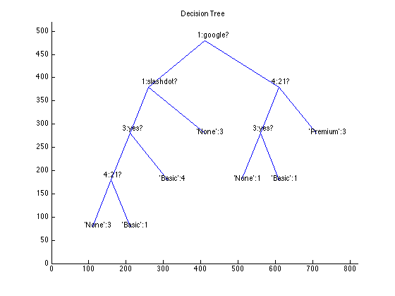
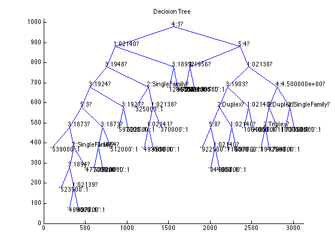

Chapter 7: Modeling with Decision Trees (Page 142)
"Programming Collective Intelligence - Building Smart Web 2.0 Applications" by Toby Segaran (O'Reilly Media, ISBN-10: 0-596-52932-5)
Decision Trees are among the most widely used data-mining methods in business analysis, medical decision-making, and policy-making. For Marketing, it is often used for customer profiling. We will take a look at an example of customer profiling based on web analytics data to predict who will become paying customers.
Contents
- Predicting Signups (Pages 142-144)
- Introducing Decision Trees (Page 144)
- Training the Tree (Pages 145-146)
- Choosing the Best Split - Gini Impurity and Entropy (Pages 147-148)
- Recursive Tree Building - Displaying the Tree (Pages 149-152)
- Graphical Display (Pages 152-153)
- Classifying New Observations (Pages 153-154)
- Pruning the Tree (Pages 154-156)
- Dealing with Missing Data (Pages 156-158)
- Dealing with Numerical Outcomes (Page 158)
- Modeling Home Prices - The Zillow API (Pages 158-161)
- Modeling "Hotness" (Pages 161-164)
- When to Use Decision Trees (Pages 164-165)
Predicting Signups (Pages 142-144)
Here is a hypothetical new high-profile web service that offers free accounts and subscription accounts. Let's say marketing did a very good job of awareness building so a lot of people come to sign up. But those users are driven by curiosity and may not necessarily be genuinely interested in the actual service. But how can you tell from thousands of leads which will be worth following up and which we can safely ignore?
Many marketers would resort to mass-emailing. Responses help narrow the targets, but you just spammed a lot of people and undermined your brand. But by using web analytics data and decision trees, you can develop a more targeted approach.
In this example, the hypothetical service offers a free trial with option to upgrade to a basic or premium service. The service needs to collect data about the trial users but it avoid asking them a lot of questions in order to make the sign-up process easy and quick, a key factor in increasing the initial sign-up. Instead, it collects information from web analytics.
Analytics data used are: the site that referred the users, where they connected from, how many pages they viewed before signing up, and ultimate choice they made after the trial. Let's load the data.
data_label={'Referrer','Location','Read FAQ','Pages Viewed','Service Chosen'};
my_data={'slashdot','USA','yes',18,'None';
'google','France','yes',23,'Premium';
'digg','USA','yes',24,'Basic';
'kiwitobes','France','yes',23,'Basic';
'google','UK','no',21,'Premium';
'(direct)','New Zealand','no',12,'None';
'(direct)','UK','no',21,'Basic';
'google','USA','no',24,'Premium';
'slashdot','France','yes',19,'None';
'digg','USA','no',18,'None';
'google','UK','no',18,'None';
'kiwitobes','UK','no',19,'None';
'digg','New Zealand','yes',12,'Basic';
'slashdot','UK','no',21,'None';
'google','UK','yes',18,'Basic';
'kiwitobes','France','yes',19,'Basic'};
disp([data_label;my_data])
'Referrer' 'Location' 'Read FAQ' 'Pages Viewed' 'Service Chosen'
'slashdot' 'USA' 'yes' [ 18] 'None'
'google' 'France' 'yes' [ 23] 'Premium'
'digg' 'USA' 'yes' [ 24] 'Basic'
'kiwitobes' 'France' 'yes' [ 23] 'Basic'
'google' 'UK' 'no' [ 21] 'Premium'
'(direct)' 'New Zealand' 'no' [ 12] 'None'
'(direct)' 'UK' 'no' [ 21] 'Basic'
'google' 'USA' 'no' [ 24] 'Premium'
'slashdot' 'France' 'yes' [ 19] 'None'
'digg' 'USA' 'no' [ 18] 'None'
'google' 'UK' 'no' [ 18] 'None'
'kiwitobes' 'UK' 'no' [ 19] 'None'
'digg' 'New Zealand' 'yes' [ 12] 'Basic'
'slashdot' 'UK' 'no' [ 21] 'None'
'google' 'UK' 'yes' [ 18] 'Basic'
'kiwitobes' 'France' 'yes' [ 19] 'Basic'
Introducing Decision Trees (Page 144)
Decision tree's popularity as method of classifying observations stems from its complete transparency. It is after all a series of if-then statements arranged into a tree. Once the tree is generated, it is quite easy to see how it makes its predictions, and you can verify its reasoning process.
We begin by creating a class to represent a decision tree. Statistics Toolbox actually offers 'classregtree' class to create a decision tree, but I decided to port the Python code example in MATLAB.
The user-defined class 'decisionnode' is a 'handle' class. It is primarily designed to hold data and it doesn't have any class methods other than the constructor method.
Class properties of 'decisionnode' are:
- col: column index of the criteria to be tested
- value: this is the value that the column must match to get a true result.
- results: stores the cell array of results for this branch. It will be empty except for endpoints.
- tb: this holds another decision node for 'true' result as the children of current node. This will be empty for endpoints.
- fb: the same as above, except that it is holds a decision node for 'false' results.
testnode=decisionnode();
disp(testnode);
clear testnode;
decisionnode handle
Properties:
col: -1
value: {}
results: {}
tb: []
fb: []
Training the Tree (Pages 145-146)
The algorithm used for this chapter is called CART (Classification and Regression Tree). CART evaluates all the observations and decides which criteria (such as "Did the user read the FAQ?") will divide up the data in such a way that the sort the outcome into two separate groups as consistently as possible.
'divideset' is a function that divides the rows into two sets based on the data in a specified column with specified 'true' value. It returns a cell array with two columns. The first column contains the set of rows that has the matching value in the specified column. The second column contains the set of rows that do not match specified value in the same column.
Here we will try to divide my_data by the 3rd column ("Read FAQ") with value to match being 'yes'. You will see that two sets are clearly separated by the values in the 3rd column, but the outcome in the last column are well mixed and do not provide consistent results. Therefore this particular column is not a very good variable to split the data.
set=divideset(my_data,3,'yes'); disp('''True'' set for divideset(my_data,3,''yes'')') disp(set{1,1}) disp('''False'' set for divideset(my_data,3,''yes'')') disp(set{1,2})
'True' set for divideset(my_data,3,'yes')
'slashdot' 'USA' 'yes' [18] 'None'
'google' 'France' 'yes' [23] 'Premium'
'digg' 'USA' 'yes' [24] 'Basic'
'kiwitobes' 'France' 'yes' [23] 'Basic'
'slashdot' 'France' 'yes' [19] 'None'
'digg' 'New Zealand' 'yes' [12] 'Basic'
'google' 'UK' 'yes' [18] 'Basic'
'kiwitobes' 'France' 'yes' [19] 'Basic'
'False' set for divideset(my_data,3,'yes')
'google' 'UK' 'no' [21] 'Premium'
'(direct)' 'New Zealand' 'no' [12] 'None'
'(direct)' 'UK' 'no' [21] 'Basic'
'google' 'USA' 'no' [24] 'Premium'
'digg' 'USA' 'no' [18] 'None'
'google' 'UK' 'no' [18] 'None'
'kiwitobes' 'UK' 'no' [19] 'None'
'slashdot' 'UK' 'no' [21] 'None'
Choosing the Best Split - Gini Impurity and Entropy (Pages 147-148)
As you can see, in order to pick the best way to split the data, we need to have a way to measure how mixed the outcomes are for comparison. We will have two metrics to choose from - Gini Impurity and Entropy.
First, we need to count the possible outcomes in each set. 'uniquecounts' finds all the different possible outcomes and returns them as a cell array of how many times they each appear in a given set. This data is in turn used by Gini Impurity or Entropy functions to determine how mixed that set is.
Gini Impurity is the expected error rate if one of the results from a divided set is randomly applied to one of the items in the set. If every item in the set is in the same category, the guess will always be correct, so that error rate is 0. If there are four possible results evenly divided in the group, there's 75% chance that the guess would be incorrect, so the error rate is 0.75.
Entropy in information theory is the amount of disorder in a set - basically, how mixed a set is. Entropy calculates the frequency of each item (the number of times it appears divided by the total number of rows) and applies these formulae:
- p(i)=frequency(outcome)=count(outcome)/count(total rows)
- Entropy=sum of p(i) x log(p(i)) for all outcomes
This is a measure of how different the outcomes are from each other. If they are all the same (e.g. if everyone becomes a premium subscriber), then the entropy is 0. The more mixed, the higher the entropy. Our goal in dividing the data into two new groups is to reduce the entropy.
The main difference between those two metrics is that entropy peaks more slowly. Consequently, it tends to penalize mixed sets a little more heavily. We will use entropy as the metric because it is more commonly used, but it is easy to use Gini Impurity instead.
disp(sprintf('gini impurity for my_data =%f',giniimpurity(my_data))) disp(sprintf('entropy for my_data =%f',entropy(my_data))) set=divideset(my_data,3,'yes'); disp(' ') disp('divideset(my_data,3,''yes'')') disp(sprintf('entropy for ''true'' set =%f',entropy(set{1,1}))); disp(sprintf('gini impurity for ''true'' set =%f',giniimpurity(set{1,1}))); clear set;
gini impurity for my_data =0.632812 entropy for my_data =1.505241 divideset(my_data,3,'yes') entropy for 'true' set =1.298795 gini impurity for 'true' set =0.531250
Recursive Tree Building - Displaying the Tree (Pages 149-152)
We can now create a decision tree. The function 'buildtree' first calculates the entropy for the whole dataset. Then it goes through each column in the dataset and divides it into two sets by possible values in given columns. Entropy is calculated for the divided sets and then information gain is calculated. Information gain is the difference between the current entropy and the weighted average entropy of the two new sets. The function calculates the information gain for every column containing predictive data and chooses the one with the highest information gain, noting its column and value pair as the best criterion. Two sets resulting from this criterion is stored in branches corresponding to true or false for that particular condition, and this process is repeated in each branch for further division until it reaches uniform outcome.
To see the resulting decision tree, you use 'printtree' function that returns a string containing the decision tree in plain text.
tree=buildtree(my_data); disp(printtree(tree))
1:google? T-> 4:21? T-> 'Premium':3 F-> 3:yes? T-> 'Basic':1 F-> 'None':1 F-> 1:slashdot? T-> 'None':3 F-> 3:yes? T-> 'Basic':4 F-> 4:21? T-> 'Basic':1 F-> 'None':3
Graphical Display (Pages 152-153)
We can also use MATLAB's graphics capability to display the decision tree visually. Here is the function for drawing the tree. The code doesn't print the True and False branch labels as they will just clutter the diagram. In the generated diagram, the True branch is always the right-hand branch.
drawtree(tree)
Classifying New Observations (Pages 153-154)
Now that we have a trained decision tree, we can use it to classify a new observation according to the tree. The function 'classify' performs this task. It traverses the tree with the observed values and return the final results when it reaches the endpoint.
observation={'(direct)','USA','yes',5};
disp('a new observation')
disp(observation)
result=classify(observation,tree);
disp(sprintf('Predicted outcome for the new observation=''%s'':%d',result{1,1},result{1,2}))
clear observation;
a new observation
'(direct)' 'USA' 'yes' [5]
Predicted outcome for the new observation='Basic':4
Pruning the Tree (Pages 154-156)
Training with the above method typically leads to 'overfitting' problem - the decision tree can become too specific to the training data. An overfitted tree may give an answer as being more certain than it really is by creating branches that decrease entropy slight for the training set even though its conditions may be completely arbitrary.
This is caused by continually splitting the tree until it cannot be split further regardless of actual difference in information gain. So you can perhaps apply branching thresholds. However, some splits may not have significant gain in the immediate branches, but it can lead to major difference down the path.
Instead, you could build the entire tree and then eliminate superfluous nodes. This process is called 'pruning'. You can check pairs of nodes with a common parent and see if merging them would increase the entropy by less than a specified threshold. If this is the case, those two nodes are merged with all possible outcomes intact.
In the example below, you need to increase the minimum gain to a very high value in order to force branch merging, thanks to the high divisibility of the sample data. In typical low divisible data, pruning can happen at a lower minimum gain.
disp('pruning with low minimum gain') prune(tree,0.1) disp(printtree(tree)) disp('pruning with high minimum gain') prune(tree,1.0) disp(printtree(tree))
pruning with low minimum gain 1:google? T-> 4:21? T-> 'Premium':3 F-> 3:yes? T-> 'Basic':1 F-> 'None':1 F-> 1:slashdot? T-> 'None':3 F-> 3:yes? T-> 'Basic':4 F-> 4:21? T-> 'Basic':1 F-> 'None':3 pruning with high minimum gain 1:google? T-> 4:21? T-> 'Premium':3 F-> 3:yes? T-> 'Basic':1 F-> 'None':1 F-> 'Basic':5, 'None':6
Dealing with Missing Data (Pages 156-158)
In many real cases, given datasets are not always complete. Fortunately, decision trees can handle missing data. For example, we may not always get the location information based on the IP address of the users, and therefore that field may be left blank. In order to handle such situations, we need to modify the function to classify new observations.
The modified classification function to handle missing data - mdclassify - works like this: when required field is missing in order to decide which branch of the tree to follow, it follows both branches, but instead of counting the results equally, it weights the results from multiple branches.
observation={'google','','yes',[]};
disp('a new observation')
disp(observation)
result=mdclassify(observation,tree);
for i=1:size(result,1)
disp(sprintf('Predicted outcome for the new observation=''%s'':%1.3f',result{i,1},result{i,2}))
end
disp(' ')
observation={'google','France','',[]};
disp('a new observation')
disp(observation)
result=mdclassify(observation,tree);
for i=1:size(result,1)
disp(sprintf('Predicted outcome for the new observation=''%s'':%1.3f',result{i,1},result{i,2}))
end
clear observation i;
a new observation
'google' '' 'yes' []
Predicted outcome for the new observation='Premium':2.250
Predicted outcome for the new observation='Basic':0.250
a new observation
'google' 'France' '' []
Predicted outcome for the new observation='Premium':2.250
Predicted outcome for the new observation='Basic':0.125
Predicted outcome for the new observation='None':0.125
Dealing with Numerical Outcomes (Page 158)
The example used here is a classification problem - classifying the users into the type of services they are likely to sign up based on their online behavior. The final outcomes are categories, which is text data. But in some cases outcomes may be numerical. Unlike categories, numbers have relationship. Some numbers are closer, others far apart. But the current category-based algorithm doesn't account for that relationship.
In order to deal with this issue, we can use 'variance' as metric rather than entropy or Gini impurity. This is just a simple statistical metric that calculates the deviation from the mean. If the variance is low, then the data is clustered close to the mean. If not, the data is scattered away from the mean.
Using this metric in the tree building function, you split the data into two sets with one sets with low variance and another with high variance. Splitting the data this way reduces the overall variance on the branches.
Modeling Home Prices - The Zillow API (Pages 158-161)
Among many possible uses for decision trees, they are most useful to understand how various factors contribute to the outcomes, especially when the outcomes are already known but there are too many factors that could have contributed to the outcomes. One such example is prices of goods that have a lot of variability in measurable ways - home prices.
Zillow (www.zillow.com) is a free website that provides real estate information, and it offers API, and it works similar way to Kayak in Chapter 5. For API see http://www.zillow.com/howto/api/APIOverview.htm
Function 'getaddressdata' calls Zillow API's 'GetDeepSearchResults' method for a single address and parse the returned XML response into a cell array of zip code, use code, year built, bathrooms, bedrooms, and price.
In order to get a dataset, you need to a list of addresses. Function 'getpricelist' reads a list of addresses in Cambridge, MA from the file 'addresslist.txt' and call 'getaddressdata' for each address in the list, returning a cell array containing the search results for that address list.
Now you can use this data to build a decision tree and display it. As the tree shows, the top of the tree is Bathrooms, meaning that the variance is lowest when you divide the dataset by the number of bathrooms.
% housedata=getpricelist(); load housedata.mat housetree=buildtree(housedata,@variance); drawtree(housetree);
Modeling "Hotness" (Pages 161-164)
"Hot or Not" (http://www.hotornot.com/) is a dating website that allows users to upload photos of themselves, and let other users rank on their physical appearance, and it aggregate the results to create a 'hotness' rating between 1 and 10 for each users. It offers an API to access the demographic data about its members along with their 'hotness' rating. http://dev.hotornot.com/signup
As of this writing, it appears that Hot or Not is no longer providing API access. Therefore functions 'getrandomratings' and 'getpeopledata' are not tested as well as the following codes.
% obtain user id-rating pairs for 500 random people % l1=getrandomratings(500); % check how many results we got % size(l1,1) % get demographic data for those people % pdata=getpeopledata(l1); % check the data % pdata(1,:) % build the decision tree, prune it, and draw the tree. % hottree=buildtree(pdata,@variance); % prune(hottree,0.5); % drawtree(hottree); % compare the 'hotness' of everyone in the South against everyone in the % Mid Atlantic. % south=mdclassify({[],[],'South'},hottree); % midat=mdclassify({[],[].'Mid Atlantic'},hottree); % south{10,1}/sum(cell2mat(south(:,1))); % midat{10,1}/sum(cell2mat(midat(:,1)));
When to Use Decision Trees (Pages 164-165)
Advantages
- easy to interpret the trained model
- provide prediction for new observations
- enable creation of questions to ask for - see comment below
- can works with categorical as well as numerical outcomes
- can handle missing data
- can handle probabilistic prediction
Disadvantages
- doesn't work well with if possible outcomes are too many.
- can only handle greater-than/less-than decisions
Comment:
For example, you can see from the example that trial users referred from Slashdot never become paying customers but those who came from Google and viewed at least 20 pages are likely to become premium subscribers. This will have impact on how you advertise on the Internet to get high quality traffic. We also see that certain variable, such as country of origin, doesn't have much significance. If so, we can stop collecting such data, and save cost.
Bottom line:
Decision trees are not a good choice for problems with many numerical inputs and outputs, or with many complex relationships between numerical inputs, such as interpreting financial data or image analysis. Decision trees are great for datasets with a lot of categorical data and numeical data with break points. Also the best choice if it is important to understand the decision making process.